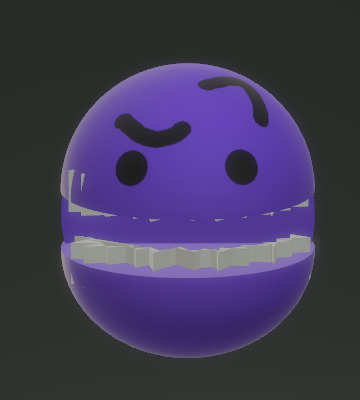

História
História e acontecimentos do jogo.
Personagens
Informações sobre os personagens do jogo.
Criadores
Informações sobre os criadores e o projeto.
Códigos.
Veja os códigos feitos pelos criadores e sua linguagem de programação.
Mundo
Conheça o mundo onde a história acontece.
Storyboards
Veja os storyboards desenvolvidos pelo grupo.